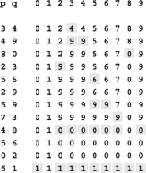
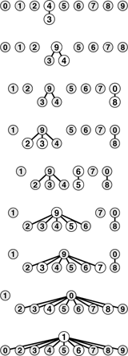
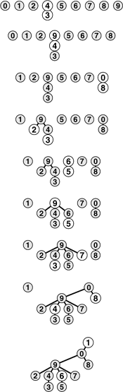
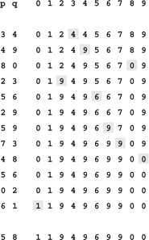
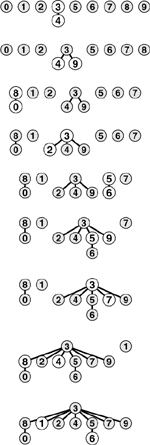
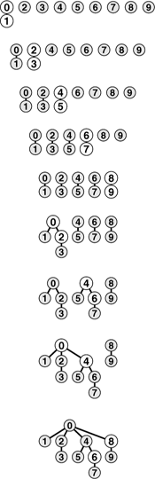
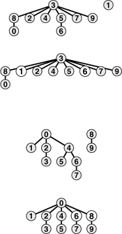
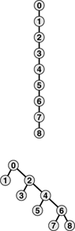
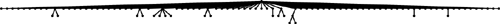

C++ Programming Robert Sedgewick - Princeton University Addison Wesley Professional Algorithms in C++, Parts 1–4: Fundamentals, Data Structure, Sorting, Searching, Third Edition
1.3. Union–Find Algorithms
The first step in the process of developing an efficient algorithm to solve a given problem is to implement a simple algorithm that solves the problem. If we need to solve a few particular problem instances that turn out to be easy, then the simple implementation may finish the job for us. If a more sophisticated algorithm is called for, then the simple implementation provides us with a correctness check for small cases and a baseline for evaluating performance characteristics. We always care about efficiency, but our primary concern in developing the first program that we write to solve a problem is to make sure that the program is a correct solution to the problem.
The first idea that might come to mind is somehow to save all the input pairs, then to write a function to pass through them to try to discover whether the next pair of objects is connected. We shall use a different approach. First, the number of pairs might be sufficiently large to preclude our saving them all in memory in practical applications. Second, and more to the point, no simple method immediately suggests itself for determining whether two objects are connected from the set of all the connections, even if we could save them all! We consider a basic method that takes this approach in Chapter 5, but the methods that we shall consider in this chapter are simpler, because they solve a less difficult problem, and are more efficient, because they do not require saving all the pairs. They all use an array of integers—one corresponding to each object—to hold the requisite information to be able to implement union and find.
Program 1.1. Quick-find solution to connectivity problem|
This program reads a sequence of pairs of nonnegative integers less than N from standard input (interpreting the pair p q to mean "connect object p to object q") and prints out pairs representing objects that are not yet connected. It maintains an array id that has an entry for each object, with the property that id[p] and id[q] are equal if and only if p and q are connected. For simplicity, we define N as a compile-time constant. Alternatively, we could take it from the input and allocate the id array dynamically (see Section 3.3).
#include <iostream.h>
static const int N = 10000;
int main()
{ int i, p, q, id[N];
for (i = 0; i < N; i++) id[i] = i;
while (cin >> p >> q)
{ int t = id[p];
if (t == id[q]) continue;
for (i = 0; i < N; i++)
if (id[i] == t) id[i] = id[q];
cout << " " << p << " " << q << endl;
}
}
|
Arrays are elementary data structures that we shall discuss in detail in Section 3.2. Here, we use them in their simplest form: we declare that we expect to use, say, 1000 integers, by writing a[1000]; then we refer to the ith integer in the array by writing a[i] for 0  i < 1000. i < 1000.
Program 1.1 is an implementation of a simple algorithm called the quick-find algorithm that solves the connectivity problem. The basis of this algorithm is an array of integers with the property that p and q are connected if and only if the pth and qth array entries are equal. We initialize the ith array entry to i for 0 i < N. To implement the union operation for p and q, we go through the array, changing all the entries with the same name as p to have the same name as q. This choice is arbitrary—we could have decided to change all the entries with the same name as q to have the same name as p.
Figure 1.3 shows the changes to the array for the union operations in the example in Figure 1.1. To implement find, we just test the indicated array entries for equality—hence the name quick find. The union operation, on the other hand, involves scanning through the whole array for each input pair.
This sequence depicts the contents of the id array after each of the pairs at left is processed by the quick-find algorithm (Program 1.1). Shaded entries are those that change for the union operation. When we process the pair p q, we change all entries with the value id[p] to have the value id[q].

Property 1.1. The quick-find algorithm executes at least MN instructions to solve a connectivity problem with N objects that involves M union operations|
For each of the M union operations, we iterate the for loop N times. Each iteration requires at least one instruction (if only to check whether the loop is finished).
|
We can execute tens or hundreds of millions of instructions per second on modern computers, so this cost is not noticeable if M and N are small, but we also might find ourselves with billions of objects and millions of input pairs to process in a modern application. The inescapable conclusion is that we cannot feasibly solve such a problem using the quick-find algorithm (see Exercise 01.2). We consider the process of quantifying such a conclusion precisely in Chapter 2.
Figure 1.4 shows a graphical representation of Figure 1.3. We may think of some of the objects as representing the set to which they belong, and all of the other objects as pointing to the representative in their set. The reason for moving to this graphical representation of the array will become clear soon. Observe that the connections between objects in this representation are not necessarily the same as the connections in the input pairs—they are the information that the algorithm chooses to remember to be able to know whether future pairs are connected.
This figure depicts graphical representations for the example in Figure 1.3. The connections in these figures do not necessarily represent the connections in the input. For example, the structure at the bottom has the connection 1-7, which is not in the input, but which is made because of the string of connections 7-3-4-9-5-6-1.

The next algorithm that we consider is a complementary method called the quick-union algorithm. It is based on the same data structure—an array indexed by object names—but it uses a different interpretation of the values that leads to more complex abstract structures. Each object points to another object in the same set, in a structure with no cycles. To determine whether two objects are in the same set, we follow pointers for each until we reach an object that points to itself. The objects are in the same set if and only if this process leads them to the same object. If they are not in the same set, we wind up at different objects (which point to themselves). To form the union, then we just link one to the other to perform the union operation; hence the name quick-union.
Figure 1.5 shows the graphical representation that corresponds to Figure 1.4 for the operation of the quick-union algorithm on the example of Figure 1.1, and Figure 1.6 shows the corresponding changes to the id array. The graphical representation of the data structure makes it relatively easy to understand the operation of the algorithm—input pairs that are known to be connected in the data are also connected to one another in the data structure. As mentioned previously, it is important to note at the outset that the connections in the data structure are not necessarily the same as the connections in the application implied by the input pairs; rather, they are constructed by the algorithm to facilitate efficient implementation of union and find.
This figure is a graphical representation of the example in Figure 1.3. We draw a line from object i to object id[i].

This sequence depicts the contents of the id array after each of the pairs at left are processed by the quick-find algorithm (Program 1.1). Shaded entries are those that change for the union operation (just one per operation). When we process the pair p q, we follow pointers from p to get an entry i with id[i] == i; then, we follow pointers from q to get an entry j with id[j] == j; then, if i and j differ, we set id[i] = id[j]. For the find operation for the pair 5-8 (final line), i takes on the values 5 6 9 0 1, and j takes on the values 8 0 1.

The connected components depicted in Figure 1.5 are called trees; they are fundamental combinatorial structures that we shall encounter on numerous occasions throughout the book. We shall consider the properties of trees in detail in Chapter 5. For the union and find operations, the trees in Figure 1.5 are useful because they are quick to build and have the property that two objects are connected in the tree if and only if the objects are connected in the input. By moving up the tree, we can easily find the root of the tree containing each object, so we have a way to find whether or not they are connected. Each tree has precisely one object that points to itself, which is called the root of the tree. The self-pointer is not shown in the diagrams. When we start at any object in the tree, move to the object to which it points, then move to the object to which that object points, and so forth, we eventually end up at the root, always. We can prove this property to be true by induction: It is true after the array is initialized to have every object point to itself, and if it is true before a given union operation, it is certainly true afterward.
The diagrams in Figure 1.4 for the quick-find algorithm have the same properties as those described in the previous paragraph. The difference between the two is that we reach the root from all the nodes in the quick-find trees after following just one link, whereas we might need to follow several links to get to the root in a quick-union tree.
Program 1.2. Quick-union solution to connectivity problem|
If we replace the body of the while loop in Program 1.1 by this code, we have a program that meets the same specifications as Program 1.1, but does less computation for the union operation at the expense of more computation for the find operation. The for loops and subsequent if statement in this code specify the necessary and sufficient conditions on the id array for p and q to be connected. The assignment statement id[i] = j implements the union operation.
for (i = p; i != id[i]; i = id[i]) ;
for (j = q; j != id[j]; j = id[j]) ;
if (i == j) continue;
id[i] = j;
cout << " " << p << " " << q << endl;
|
Program 1.2 is an implementation of the union and find operations that comprise the quick-union algorithm to solve the connectivity problem. The quick-union algorithm would seem to be faster than the quick-find algorithm, because it does not have to go through the entire array for each input pair; but how much faster is it? This question is more difficult to answer here than it was for quick find, because the running time is much more dependent on the nature of the input. By running empirical studies or doing mathematical analysis (see Chapter 2), we can convince ourselves that Program 1.2 is far more efficient than Program 1.1, and that it is feasible to consider using Program 1.2 for huge practical problems. We shall discuss one such empirical study at the end of this section. For the moment, we can regard quick union as an improvement because it removes quick find's main liability (that the program requires at least NM instructions to process M union operations among N objects).
This difference between quick union and quick find certainly represents an improvement, but quick union still has the liability that we cannot guarantee it to be substantially faster than quick find in every case, because the input data could conspire to make the find operation slow.
Property 1.2. For M > N, the quick-union algorithm could take more than MN/2 instructions to solve a connectivity problem with M pairs of N objects|
Suppose that the input pairs come in the order 1-2, then 2-3, then 3-4, and so forth. After N – 1 such pairs, we have N objects all in the same set, and the tree that is formed by the quick-union algorithm is a straight line, with N pointing to N – 1, which points to N – 2, which points to N – 3, and so forth. To execute the find operation for object N, the program has to follow N – 1 pointers. Thus, the average number of pointers followed for the first N pairs is
(0 + 1 + ... + (N – 1))/N = (N – 1)/2.
Now suppose that the remainder of the pairs all connect N to some other object. The find operation for each of these pairs involves at least (N – 1) pointers. The grand total for the M find operations for this sequence of input pairs is certainly greater than MN/2.
|
Fortunately, there is an easy modification to the algorithm that allows us to guarantee that bad cases such as this one do not occur. Rather than arbitrarily connecting the second tree to the first for union, we keep track of the number of nodes in each tree and always connect the smaller tree to the larger. This change requires slightly more code and another array to hold the node counts, as shown in Program 1.3, but it leads to substantial improvements in efficiency. We refer to this algorithm as the weighted quick-union algorithm.
Figure 1.7 shows the forest of trees constructed by the weighted union–find algorithm for the example input in Figure 1.1. Even for this small example, the paths in the trees are substantially shorter than for the unweighted version in Figure 1.5. Figure 1.8 illustrates what happens in the worst case, when the sizes of the sets to be merged in the union operation are always equal (and a power of 2). These tree structures look complex, but they have the simple property that the maximum number of pointers that we need to follow to get to the root in a tree of 2n nodes is n. Furthermore, when we merge two trees of 2n nodes, we get a tree of 2n+1 nodes, and we increase the maximum distance to the root to n+1. This observation generalizes to provide a proof that the weighted algorithm is substantially more efficient than the unweighted algorithm.
This sequence depicts the result of changing the quick-union algorithm to link the root of the smaller of the two trees to the root of the larger of the two trees. The distance from each node to the root of its tree is small, so the find operation is efficient.

The worst scenario for the weighted quick-union algorithm is that each union operation links trees of equal size. If the number of objects is less than 2n, the distance from any node to the root of its tree is less than n.

Program 1.3. Weighted version of quick union|
This program is a modification to the quick-union algorithm (see Program 1.2) that keeps an additional array sz for the purpose of maintaining, for each object with id[i] == i, the number of nodes in the associated tree, so that the union operation can link the smaller of the two specified trees to the larger, thus preventing the growth of long paths in the trees.
#include <iostream.h>
static const int N = 10000;
int main()
{ int i, j, p, q, id[N], sz[N];
for (i = 0; i < N; i++)
{ id[i] = i; sz[i] = 1; }
while (cin >> p >> q)
{
for (i = p; i != id[i]; i = id[i]) ;
for (j = q; j != id[j]; j = id[j]) ;
if (i == j) continue;
if (sz[i] < sz[j])
{ id[i] = j; sz[j] += sz[i]; }
else { id[j] = i; sz[i] += sz[j]; }
cout << " " << p << " " << q << endl;
}
}
|
Property 1.3. The weighted quick-union algorithm follows at most lg N pointers to determine whether two of N objects are connected|
We can prove that the union operation preserves the property that the number of pointers followed from any node to the root in a set of k objects is no greater than lg k. When we combine a set of i nodes with a set of j nodes with i j, we increase the number of pointers that must be followed in the smaller set by 1, but they are now in a set of size i+j, so the property is preserved because 1+lg i = lg(i+i) lg(i+j).
|
The practical implication of Property 1.3 is that the weighted quick-union algorithm uses at most a constant times M lg N instructions to process M edges on N objects (see Exercise 1.9). This result is in stark contrast to our finding that quick find always (and quick union sometimes) uses at least MN/2 instructions. The conclusion is that, with weighted quick union, we can guarantee that we can solve huge practical problems in a reasonable amount of time (see Exercise 1.11). For the price of a few extra lines of code, we get a program that is literally millions of times faster than the simpler algorithms for the huge problems that we might encounter in practical applications.
It is evident from the diagrams that relatively few nodes are far from the root; indeed, empirical studies on huge problems tell us that the weighted quick-union algorithm of Program 1.3 typically can solve practical problems in linear time. That is, the cost of running the algorithm is within a constant factor of the cost of reading the input. We could hardly expect to find a more efficient algorithm.
We immediately come to the question of whether or not we can find an algorithm that has guaranteed linear performance. This question is an extremely difficult one that plagued researchers for many years (see Section 2.7). There are a number of easy ways to improve the weighted quick-union algorithm further. Ideally, we would like every node to point directly to the root of its tree, but we do not want to pay the price of changing a large number of pointers, as we did in the quick-union algorithm. We can approach the ideal simply by making all the nodes that we do examine point to the root. This step seems drastic at first blush, but it is easy to implement, and there is nothing sacrosanct about the structure of these trees: If we can modify them to make the algorithm more efficient, we should do so. We can implement this method, called path compression, easily, by adding another pass through each path during the union operation, setting the id enTRy corresponding to each vertex encountered along the way to point to the root. The net result is to flatten the trees almost completely, approximating the ideal achieved by the quick-find algorithm, as illustrated in Figure 1.9. The analysis that establishes this fact is extremely complex, but the method is simple and effective. Figure 1.11 shows the result of path compression for a large example.
We can make paths in the trees even shorter by simply making all the objects that we touch point to the root of the new tree for the union operation, as shown in these two examples. The example at the top shows the result corresponding to Figure 1.7. For short paths, path compression has no effect, but when we process the pair 1 6, we make 1, 5, and 6 all point to 3 and get a tree flatter than the one in Figure 1.7. The example at the bottom shows the result corresponding to Figure 1.8. Paths that are longer than one or two links can develop in the trees, but whenever we traverse them, we flatten them. Here, when we process the pair 6 8, we flatten the tree by making 4, 6, and 8 all point to 0.

We can nearly halve the length of paths on the way up the tree by taking two links at a time, and setting the bottom one to point to the same node as the top one, as shown in this example. The net result of performing this operation on every path that we traverse is asymptotically the same as full path compression.

This sequence depicts the result of processing random pairs from 100 objects with the weighted quick-union algorithm with path compression. All but two of the nodes in the tree are one or two steps from the root.

There are many other ways to implement path compression. For example, Program 1.4 is an implementation that compresses the paths by making each link skip to the next node in the path on the way up the tree, as depicted in Figure 1.10. This method is slightly easier to implement than full path compression (see Exercise 1.16), and achieves the same net result. We refer to this variant as weighted quick-union with path compression by halving. Which of these methods is the more effective? Is the savings achieved worth the extra time required to implement path compression? Is there some other technique that we should consider? To answer these questions, we need to look more carefully at the algorithms and implementations. We shall return to this topic in Chapter 2, in the context of our discussion of basic approaches to the analysis of algorithms.
Program 1.4. Path compression by halving|
If we replace the for loops in Program 1.3 by this code, we halve the length of any path that we traverse. The net result of this change is that the trees become almost completely flat after a long sequence of operations.
for (i = p; i != id[i]; i = id[i])
id[i] = id[id[i]];
for (j = q; j != id[j]; j = id[j])
id[j] = id[id[j]];
|
The end result of the succession of algorithms that we have considered to solve the connectivity problem is about the best that we could hope for in any practical sense. We have algorithms that are easy to implement whose running time is guaranteed to be within a constant factor of the cost of gathering the data. Moreover, the algorithms are online algorithms that consider each edge once, using space proportional to the number of objects, so there is no limitation on the number of edges that they can handle. The empirical studies in Table 1.1 validate our conclusion that Program 1.3 and its path-compression variations are useful even for huge practical applications. Choosing which is the best among these algorithms requires careful and sophisticated analysis (see Chapter 2).
Table 1.1. Empirical study of union-find algorithmsThese relative timings for solving random connectivity problems using various union–find algorithms demonstrate the effectiveness of the weighted version of the quick union algorithm. The added incremental benefit due to path compression is less important. In these experiments, M is the number of random connections generated until all N objects were connected. This process involves substantially more find operations than union operations, so quick union is substantially slower than quick find. Neither quick find nor quick union is feasible for huge N. The running time for the weighted methods is evidently proportional to N, as it approximately doubles when N is doubled. | N | M | F | U | W | P | H | 1000 | 6206 | 14 | 25 | 6 | 5 | 3 | 2500 | 20236 | 82 | 210 | 13 | 15 | 12 | 5000 | 41913 | 304 | 1172 | 46 | 26 | 25 | 10000 | 83857 | 1216 | 4577 | 91 | 73 | 50 | 25000 | 309802 | | | 219 | 208 | 216 | 50000 | 708701 | | | 469 | 387 | 497 | 100000 | 1545119 | | | 1071 | 1106 | 1096 | Key:
F quick find (Program 1.1)
|
U quick union (Program 1.2) W weighted quick union (Program 1.3) P weighted quick union with path compression (Exercise 1.16) H weighted quick union with halving (Program 1.4) |